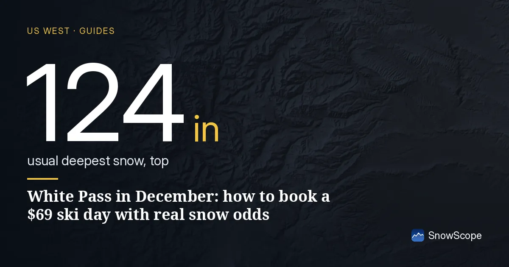

White Pass in December: how to book a $69 ski day with real snow odds
White Pass rewards skiers who plan. Its cheapest adult tickets are sold online, ahead of time, from $69 on off-peak days, and our snow history says the second half of December is when the bet gets safe.
See the live snow forecast for White Pass Ski Area in the SnowScope appSnow depth, powder alerts and the 3D map, free.
A quiet pass under Mount Rainier
White Pass sits on US-12 east of Packwood, in the shadow of Mount Rainier. On our mapping it has 8 lifts and about 22 mi (36 km) of runs between roughly 4,480 ft (1,367 m) and 6,520 ft (1,987 m). There is no village to pay for, which is part of why a day here costs less than at the big names.
Winter usually settles in early: in the middle of our 46 winters, lasting snow reaches mid-mountain in late October.

The booking game
White Pass uses dynamic online pricing for the 2026/27 season. Adult tickets start as low as $69 on off-peak days, Monday to Thursday outside holidays, and $89 on peak days, Friday to Sunday and holidays. As a date sells, the price steps up, to as much as $99 off-peak and $119 on a peak day.
In practice, the floor price goes to people who pick a weekday and buy early. If you wait for the snow report and then book a December Saturday, expect to pay closer to the top of the range.

Which December week to book
Our history gives a clear ladder. The share of winters with good snow at mid-mountain (a weekly mean of 20 in, 50 cm, or more) is 74 % in the week of 30 November to 6 December, 85 % from 7 to 13 December, 91 % from 14 to 20 December and 96 % from 21 to 27 December.
On a typical 15 December, mid-mountain, about 5,500 ft (1,677 m), holds 40 in (102 cm) and the top 42 in (107 cm). By 31 December mid-mountain is at 59 in (151 cm). A lean December (one winter in ten) still had 17 in (42 cm) at mid-mountain on the 15th, enough for groomed runs, not for exploring.
White Pass, Mt. Baker or Timberline?
Mt. Baker gets more snow on our numbers, 46 in (116 cm) at mid-mountain on a typical 15 December, but sells only on the day: $98.80 off-peak and $115.42 peak. Timberline's full-day ticket is $129 off-peak and $161 peak.
So White Pass is the cheapest of the three if you book an off-peak day early, and Mt. Baker is the safer snow bet. Both beat a peak day on Mt. Hood on price.
One more way in: the Indy Pass
White Pass is on the Indy Pass list for 2026-27. The Indy Base Pass costs $419 for adults and gives two days at each of more than 300 member areas, with blackout dates; the Indy+ Pass at $469 removes the blackouts. If you plan several small-hill trips this winter, it is worth comparing with a handful of online day tickets.
Tips for skiers
- Pick your December date early and on a weekday to get the $69 floor.
- If you can wait, book the week of 14 to 20 December or later: past winters were much more reliable then.
- US-12 over the pass can close or need chains in storms: check the pass report before you drive.
- Last winter was very thin here, so do not judge this season by it: look at the snow map the week before.
References and credits
- White Pass, online day tickets 2026/27 (official) skiwhitepass.com/online-day-ticket-sales
- Indy Pass, shop 2026-27 (official) www.indyskipass.com/shop
- Mt. Baker Ski Area, daily lift tickets (official) www.mtbaker.us/tickets-and-passes/daily-lift-tickets/
- Timberline Lodge, winter lift tickets 2026/2027 (official) www.timberlinelodge.com/activities/winter/lift-tickets/
- OpenSkiMap (mapped lifts and runs) openskimap.org/
- avalanche.org, US avalanche centers and forecasts avalanche.org/
About these numbers
Snow numbers: SnowScope snow history, 46 past winters (1980-81 to 2025-26) at the base, mid-mountain and top heights given, a reconstruction of past snow for an area corrected for height (ERA5-Land based; Snow_Hydro 1 km for Morocco), not the ski area's own snow reports. Current snow: the SnowScope snow map. Lifts, runs and heights: OpenSkiMap mapping. Prices: the official pages listed below, read on 13 November 2026; dynamic prices change with the date and with demand.
Official avalanche bulletins: avalanche.org (US national portal)
Cite this report
For research, teaching or the press: the numbers and charts are free to reuse under CC BY 4.0 with this citation.
SnowScope (2026), White Pass in December: how to book a $69 ski day with real snow odds, https://snowscope.app/blog/en/2026/11/white-pass-december-skiing-budget-2026.html, accessed 2026-11-14
SnowScope (Atlas Labs). (2026, November 14). White Pass in December: how to book a $69 ski day with real snow odds. SnowScope snow reports. https://snowscope.app/blog/en/2026/11/white-pass-december-skiing-budget-2026.html
BibTeX
@misc{snowscope2026whitepassdecemberskiingb,
author = {{SnowScope (Atlas Labs)}},
title = {White Pass in December: how to book a $69 ski day with real snow odds},
year = {2026},
month = nov,
howpublished = {\url{https://snowscope.app/blog/en/2026/11/white-pass-december-skiing-budget-2026.html}},
note = {Published 2026-11-14 17:07 UTC; accessed 2026-11-14}
}· CC BY 4.0 · Methods, data and tools →
White Pass Ski Area: snow and temperature by height, this winter vs last (tools) →
Follow White Pass Ski Area
Free: a message when fresh snow is coming, and the forecast every morning.
More snow reports

Telluride holds 115 cm (45 in) on 8 November. The freezing level climbs to 4,280 m (14,042 ft) on 9 November, bringing rain-on-snow risk to the highest slopes.

Fresh snow across the US West has built depths well above normal. At Palisades Tahoe Alpine Meadows, upper slopes hold 75 cm (measured 2026-11-18), compared to 10 cm typical for mid-November.

Kendall Mountain now has 51 inches on upper slopes as of November 5, 2026. Snow peaks in late December and March—the best historical windows to visit.